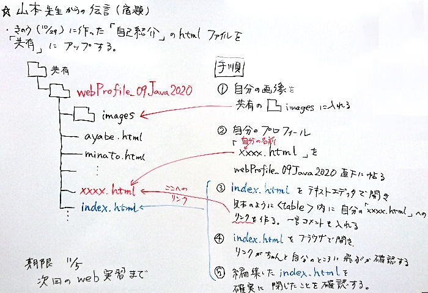

＊リンク
<a href="URL">文字列</a>
<a>タグのことを「a タグ」「アンカータグ」と言います。リンクを作るために使います。
リンク先に URLを指定すると外部サイトに飛びます。相対パスを指定すると自分のＰＣ内の別ファイルに飛び、
id を付けると ページ内の移動にも使えます。(ページ内リンクは後述)
上記の()のように文中にリンクを作ることもできます。
〔例〕
＊URLを指定:
<a href="https://sozosha-rs.jp/">創造社リカレントスクール</a>
↓
創造社リカレントスクール
https://sozosha-rs.jp/
リンクアウト(= リンクが つながらない)ときのために 隠したURLも付けてあげましょう。
こうすると事前にどこへ飛ぶのか判り親切なリンクにもなります。
文字で代替せずに、このように表示することも可能です。
<a href="https://sozosha-rs.jp/">https://sozosha-rs.jp/</a>
↓
◇創造社リカレントスクール
https://sozosha-rs.jp/
＊相対パスを指定
<a href="index.html">index.html</a>
↓
◇webProfile_09Java2020
index.html
|
＊文字装飾とレイアウト
いろいろな文字装飾です。ブラウザによっては反映されないタグもあります。
・太字 <b>太字</b> ⇒
太字
・斜体 <i>斜体</i> ⇒
斜体
・下線 <u>下線</u> ⇒
下線
・取消 <s>取消</s> ⇒
取消
・改行 <br>
・文字の色やサイズ
<font color="green" size="6">フォントタグ</font>
⇒
フォントタグ
・範囲指定 インライン要素: 前後に改行が入らない(行中にインラインで表示される)タグの総称。
<span></span>
繰り返し
<font>タグで色などを指定すると、毎回 記事の文中に同じ色指定のタグが挿入され、
コンテンツ(= 中身)である本文が見づらくなるので、
<span>で範囲を指定し、CSS(= スタイルシート)で一括して色指定などを行う。
この方法だと色やサイズなどを変更したい場合も１か所だけ変えれば済む。
(
<font>タグは文中の何か所も変えて回らねばならない)
<span style="color: red; background-color: gray; font-size: x-large;">スパンタグ</span>
⇒
スパンタグ
このように HTML中に style属性で CSSの記述をすることもできるが、上で述べたように
<font>タグの不利益と同じになるので、あまり使用しない。
複数の要素を記述したいときは style=""の中を「;」で区切る。
style属性の特殊な利点は後述するので、そのときにこの方法で記述する。
・範囲指定 ブロック要素: 前後に改行が入るタグの総称。
<div></div>
数行にわたる まとまった内容のレイアウトなどに使う。
・align属性 align="center"
開始タグ内に、配置位置を指定。センタリングや、right, leftも指定可
・style属性 style=""
開始タグ内にスタイルシートの記述をできる。
style適用の優先度が一番高く、CSS(スタイルシート)の内容がブラウザの仕様で反映されないときなどに
HTMLタグに style属性を使って記述すると反映されることがある。
＊<table>タグ
<table>
<tr><td>
(囲み記事の内容)
</td></tr>
</table>
|
<table>タグは授業でも学習した通り、本来 表を作成するタグだが、
１行１列のテーブルを作ることで、囲み記事として使用できる。
このページの囲み記事もこれを利用して表示している。
＊画像を表示する
<img src="URL" width="横幅" height="縦高" align="配置位置" alt="代替文字列" />
・src属性: 画像ファイルをここに探しにいく。
URLを指定するのが一般的だが、自分が管理していないサイトの画像を参照すると、
画像変更でファイル名が変わったり、サイト閉鎖などで画像を表示できなくなる。
できれば「imagesフォルダ」に画像を入れ、そこへの相対パスを記述したほうが安全。
絶対パスだと移動するたびにパスを書き換えなければいけなくなる。
相対パスで記述しておくと画像ファイルの置いてある場所との階層関係を同じにしておけば、
画像フォルダごと移動するとパスを変えなくて良いという利点がある。
・width属性・height属性: 画像の表示サイズを指定
どちらも指定せずとも、また width か heightのどちらかでも画像は表示されるが、
内部的に「元の画像サイズを取りに行き、表示画面のサイズも取り、更に縦横比から表示する画像のサイズを計算し」
やっと画像を表示する。これら一連の処理のために画像表示が遅くなることは けっこうある。
このタイムラグ(表示の遅れ)をなくすには、あらかじめ「width属性・height属性で表示サイズを指定ておく」と
表示が速くなる。サイズを指定する際、原画の縦横比を崩すと表示される画像が歪んで(ゆがんで)しまうので、
原画のwidth, heightを同じ数で割ると良い。
ＰＣがやる計算をあらかじめしておいてあげることで、コンマ何秒かの表示を速くする。
今のＰＣやスマホの演算能力は高いので、そこまでしなくてもいいのかも。
また画像のデータサイズが「1 MB」(メガバイト)以上あると重くなるので、
できれば事前に圧縮して「数百KB」(キロバイト)程度にしておくとタイムラグは ほとんどない。
・align属性: 画像の配置位置を指定
center: センタリング
right: 右寄せ
left: 左寄せ
・alt属性: 画像表示ができない場合にここの文字列を表示
Ｗｅｂページは web上で見られることを前提としたページなので、
ここには何らかの文字列を入れておくと検索ロボットが巡回してきたときに
「ここに○○の画像が置いてある」と認識し検索ワードに加える。
アクセス数を意識する場合は必ず alt属性を記入すると良い。
＊画像の回り込み
<img src="images/webProfileAnnounceδ700×480.JPG"
width="350" height="240" align="right" alt="山本先生の伝言" />
†700×480 / 宿題内容

画像タグ内に align="right" や align="left"を指定すると、画像の横に文字列を書くことができる。
画像入りの文章で説明するときに、よく使う手法。
回り込み文字を終了して、画像の下に文字を書く場合は
<br clear="all" />という特殊な改行タグを使う。
<table>タグ内にalign属性を記述しても、同様にテーブルの横に文字列を回り込ませることができます。
＊画像にリンクを付ける
<a href="画像URL"><img src="画像URL" ～ /></a>
このように
<img>タグを
<a href=""></a> で囲えば良い。
ここの画像も原画にリンクさせてあるので、クリックすると拡大表示する。
＊ＨＴＭＬのネスト(入れ子)規則
HTMLはタグを入れ子にできるが、内側のタグを閉じてから外側のタグを閉じる。
例えて言うと、こういう感じ。
【 〔 《 ( ) ( ) 》 〕 】
完全に内側に内包する形でタグを閉じていく。そうしないと、そのタグの内容を正しく読み取ってくれないので注意。
＊特殊な文字の表示方法
〔例〕< ⇒ <
> ⇒ >
& ⇒ &
" ⇒ "
' ⇒ '
♥ ⇒ ♥
|
HTMLでは「<」「>」「&」を表示するのが難しく、
「<」「>」はHTMLタグと解釈されてしまうので、
これを表示させるには「&○○;」のような書き方をします。
一般文字もこの方法で記述できます。
＊ページ内を移動するリンク
<h2 id="utility"> のようにタグ内に id 属性で移動させたい場所の名前をつけます。
<a href="#utility"> その後 a タグで このように行き先を指定します。
＊ id で名前を付ける
<h2 id="localLink"><i>＊ ページ内リンク ＊</i></h2>
＊リンクに「href="#名前"」と行き先を指定する
<a href="#localLink">ページ内リンク</a>
⇒ ページ内リンク
|
◆参考文献
＊HTMLクイックリファレンス
http://www.htmq.com/
＊とほほのＷＷＷ入門
http://www.tohoho-web.com/www.htm
＊(株)アンク『ホームページ辞典 HTML, CSS, JavaScript 第６版』翔泳社,2017
最後まで見てくれた方に「おまけ」として、上の目次には載っていない「謎の大鹿プロフィール」をお届けしよう。
↑要らん？
そうか。なら、やめとこう。
いえね。「HTMLミニ講座」としては、キレイにまとまった(と自分では思っている)ところで、
私のプロフィールを付けてもなぁと。でも一応「webProfile」という お題だし、趣旨と違うファイルをアップするのもアレだから、
プロフィールも付けておこう。(←しぶしぶかっ)
私、大鹿はリカレントスクールの職業訓練Javaコースの修了生です。
なので学校や自分の勉強と就職活動を並行して進めていく大変さを身をもって体験しています。
私が訓練生の頃のアダ名は なぜか「姉さん」でした。こうして改めてお知らせすることもないのだけど、
47歳の おっちゃんが「姉さん」って・・(←本人は けっこう気に入ってたらしい)
リカレントに来る前は 10年も ひきこもりをしていました。その間に たまに怪しげなお仕事もして(わるいことはしてないよ)、
その前は８年ほど 個別指導の塾で おもに小学生相手に「中学受験の算数」を教えていました。
なので大鹿は子供と仲良くなるのが とても早いです。
あるとき、小学５年生の男の子と一緒に教室で遊んでいたら、こんなことを言われました。
小学生「大鹿先生って、子供だねぇ・・」
・・って、おいおい。私は小学生の子と一緒の目線で話そうとしているだけではないか。
なので「大鹿は子供と仲良くなるのが とても早いです」ではなく「大鹿は精神年齢が子供」なのらしい。
＊おまけの おまけ
◇私の GitHubアカウント
https://github.com/shika-sophia
私の拙い(つたない)コードを全世界に公開しちゃってます。私の経歴も丸わかり。
最近は Gitの「芝を植える」(= GitHubにコードをアップしたり、何か更新すると その日の色が緑に変わる)
ことにハマッテます。毎日ＰＣを開いて何かアップできるものを作るいい励みになってます。
とはいえ、たまにはモチベ上がらない日も・・そんなときは、ごくたまにインチキアップでごまかしてしまう私であった・・
まぁ無理せず、楽しみながらやっていきましょ～
◇好きな画像
私の好きな画像を貼っておきます。
「貴希(たかき)」さん作。この画像は私のＰＣのロック画面にしているので、いつも見ています。
†1200×800 / Takaki "Fantasia"

{kind=link}